In her conceptual works, Elmas Deniz calls attention to ecological changes occurring with capitalism and the age of the Anthropocene. She examines the changing of the landscape and the deterioration of the nature by humankind. Deniz is showing two works about disappeared flows of waterin 16th Istanbul Biennial. The first one is a three-dimensional topographic relief of Istanbul, spanning the area from Şişli to Taksim Square. On this relief, lost rivers and creeks are marked on the current roads.
Lost Waters
 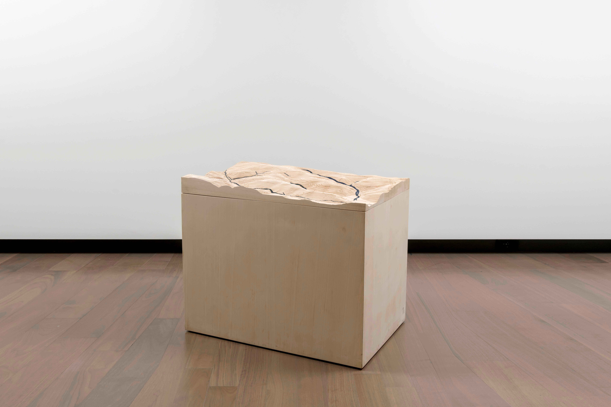
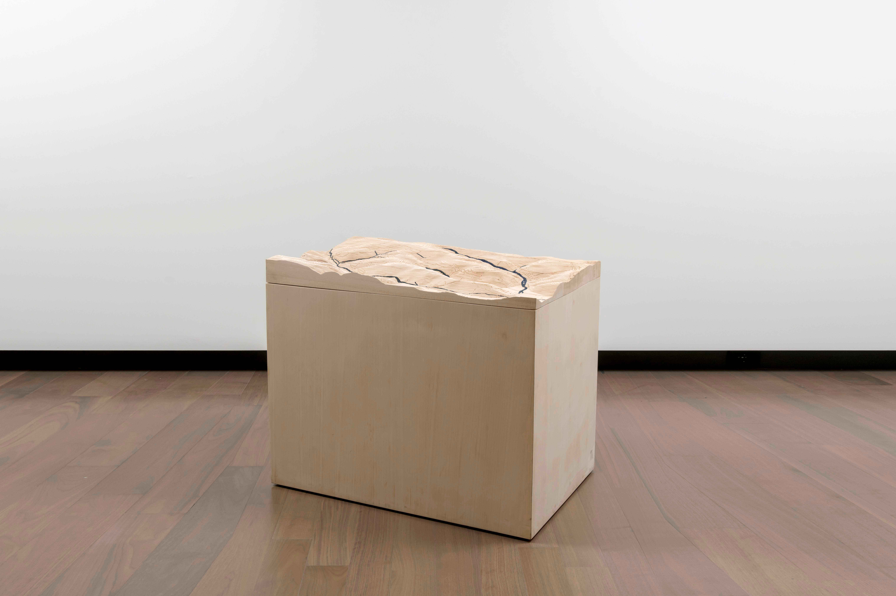
 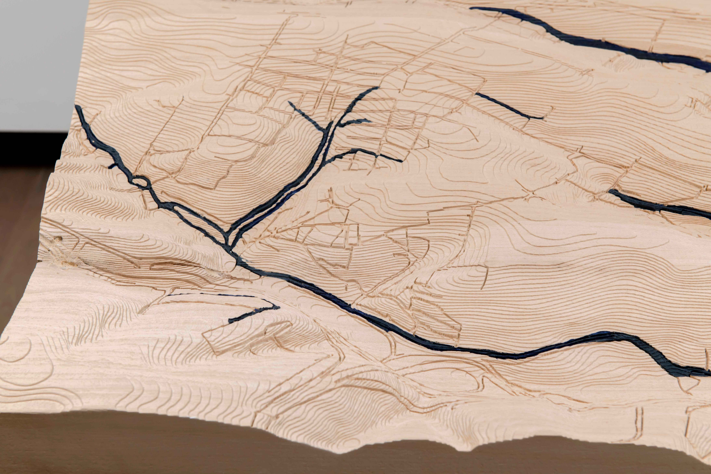
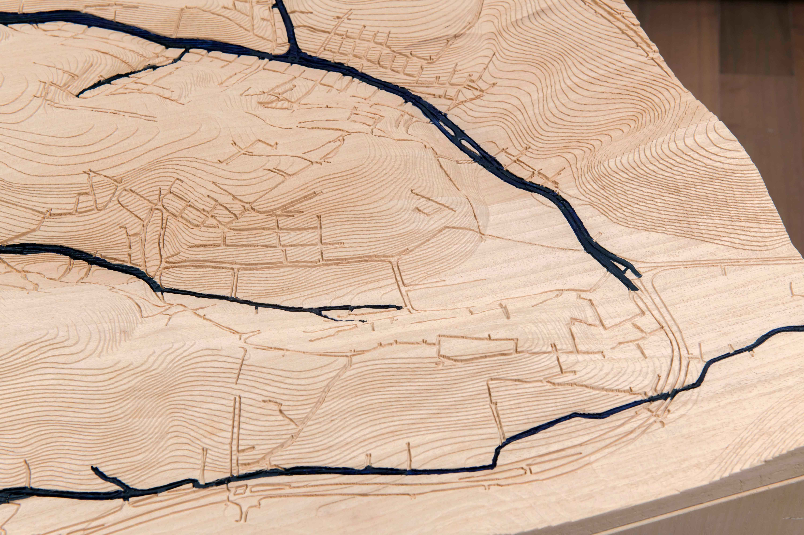
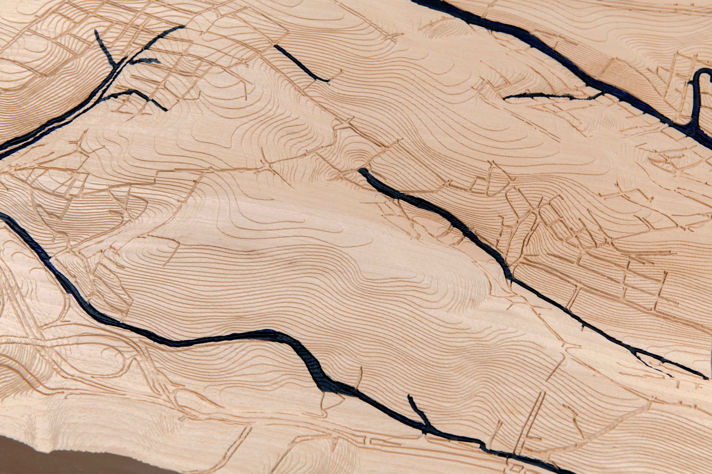
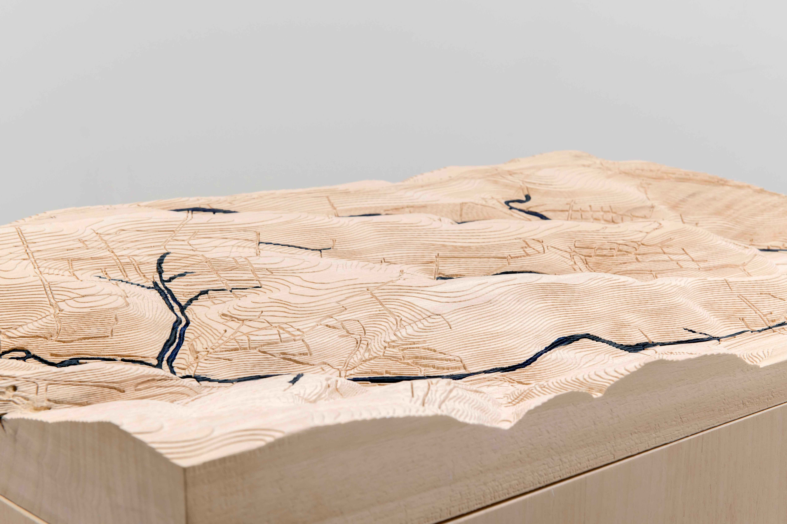
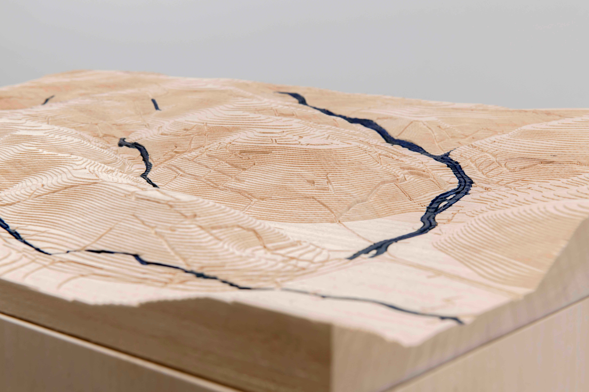
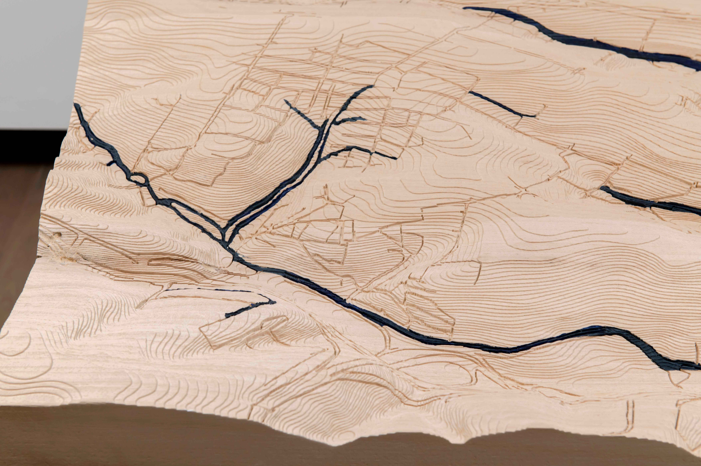
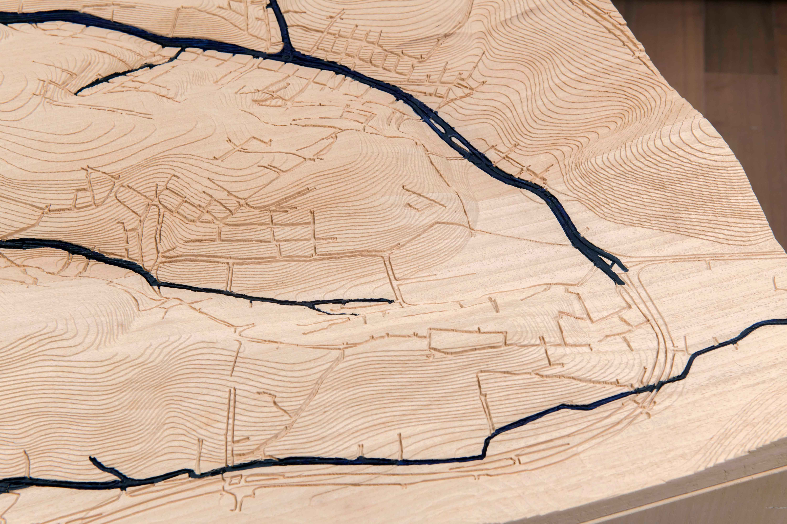
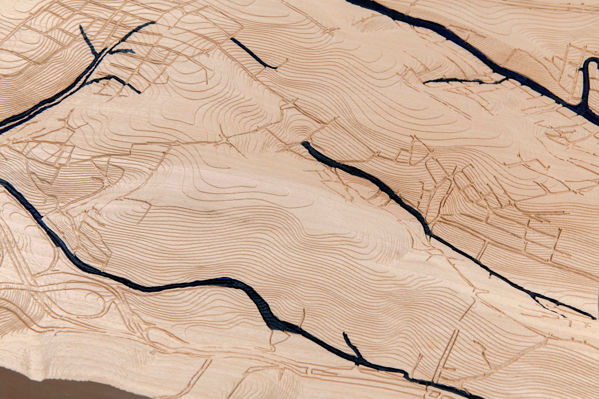
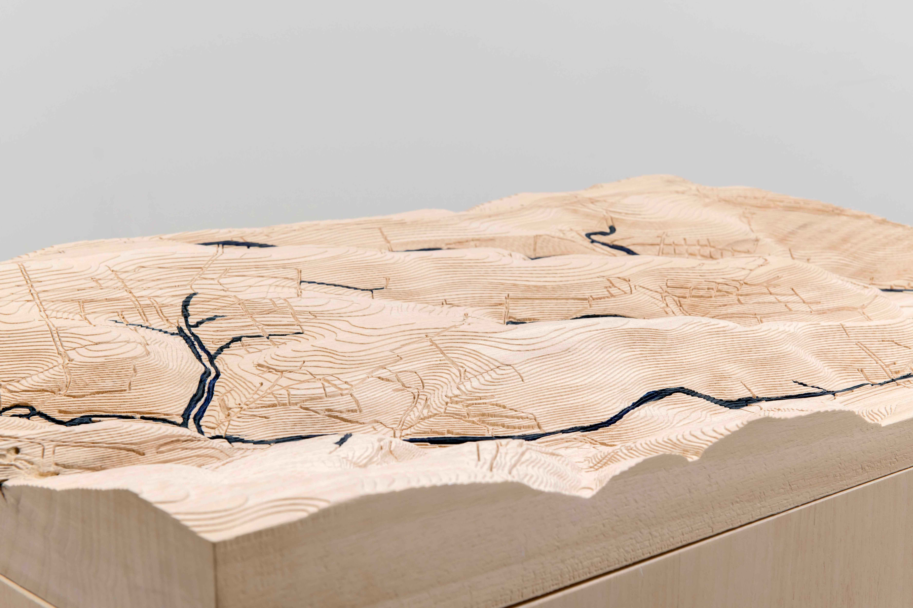
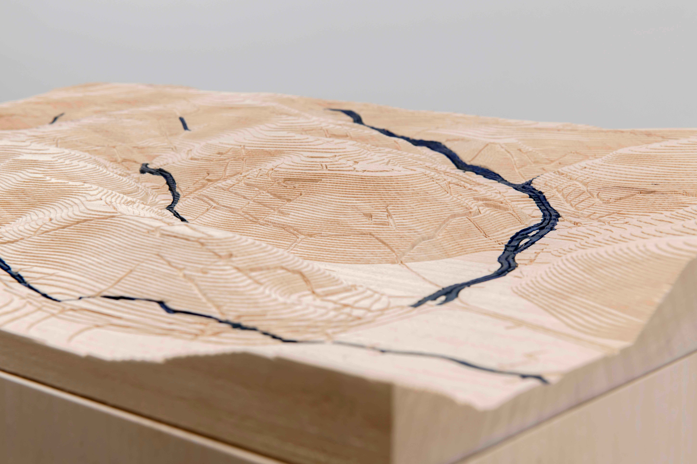